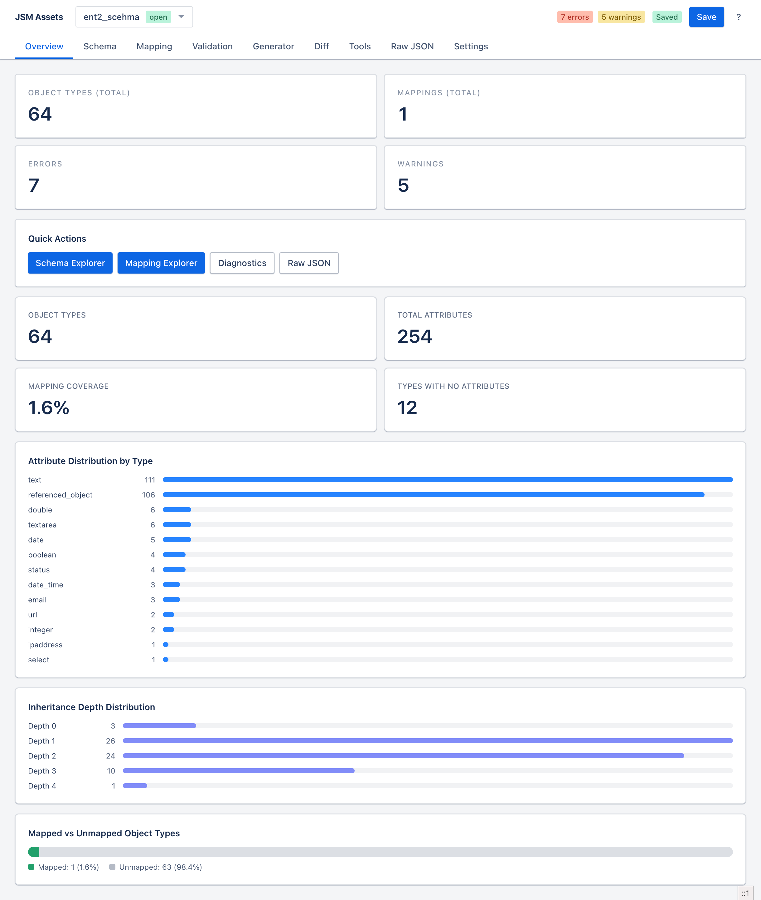
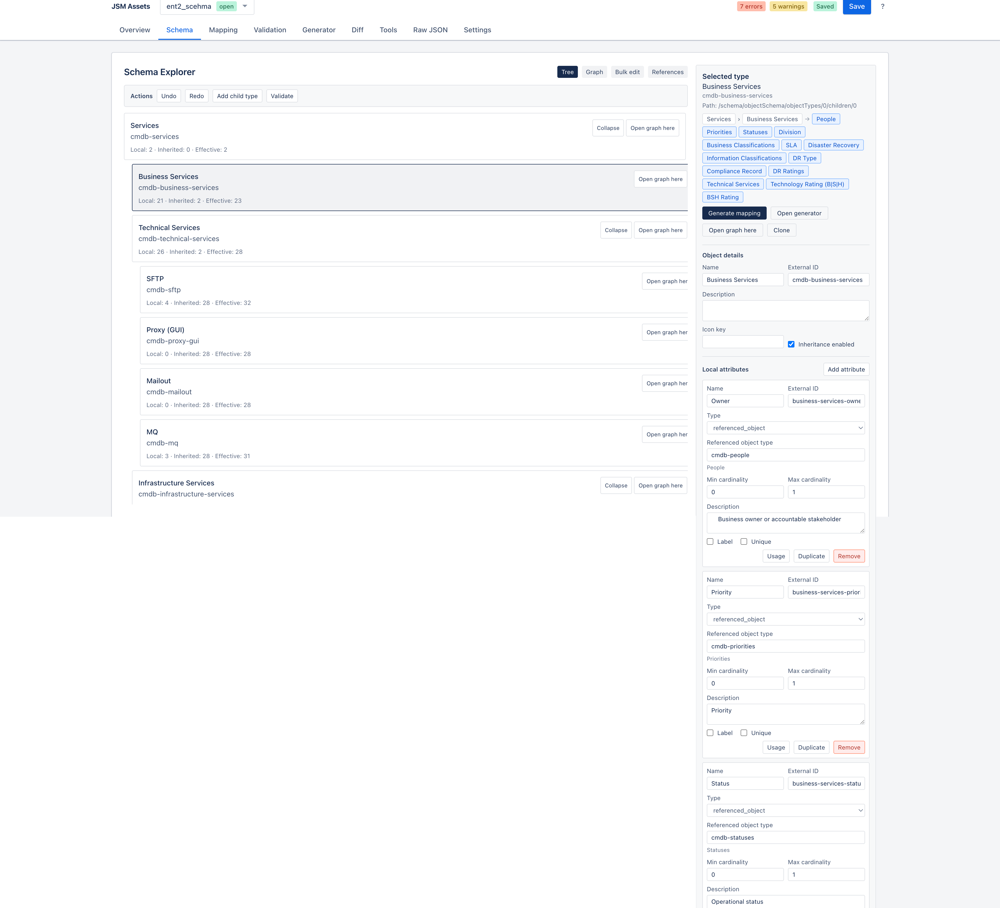

5 layersParse, shape, contract, cross-reference, business rules
Server-backedProjects, sharing, versions, baselines, environments, and changelog storage
Product scope
What the application does
The product covers the full external import lifecycle: import or open a project, inspect
schema and mappings, validate, edit, compare against saved or live state, and push changes
back to Atlassian.
Projects
Disk-backed collaboration
Authenticated workspaces with versions, baselines, activity, sharing, export, staged deletions, and environments.
Schema
Tree, graph, refs
Object type hierarchy exploration, schema detail editing, bulk attribute operations, and reference visualization.
Validation
Structured diagnostics
Layered diagnostics with JSON pointers, worker-backed execution, rule toggles, deferred findings, and quick navigation.
Operations
Live integration
Import from JSM, push mapping, remote diff, schema export, delete tools, GUID replacement, environment push, and icon sync.
Key workflows
Typical usage path
These are the flows the application is optimized around.
Schema maintenance
Open a project, inspect object types in the Schema Explorer, stage risky deletions, update attributes, validate, save a version, then push to an import source.
Change review
Capture a baseline, make edits, compare against the baseline or remote live document, review semantic and impact findings, then export a report or changelog.
Visual reference
Product screens
The published docs ship with real captures from the application for orientation and review.

OverviewQuick health, summary counters, and direct access to the main editing surfaces.

Schema ExplorerTree-based object type exploration with editing and staged deletion affordances.
Mapping ExplorerCoverage and detail views for selectors, locators, IQL, and mapping gaps.
01
Detailed feature guide
All end-user capabilities documented, including projects, staged deletions, tools, settings, command palette, and shortcuts.